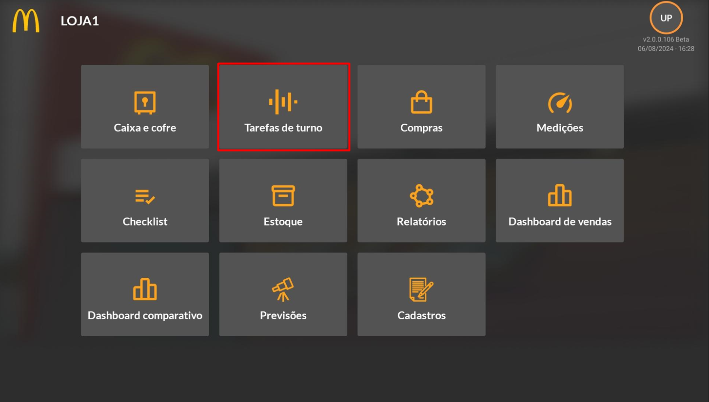
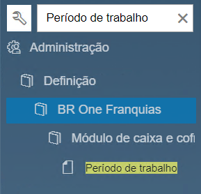
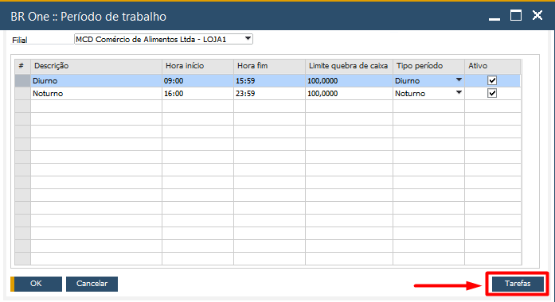
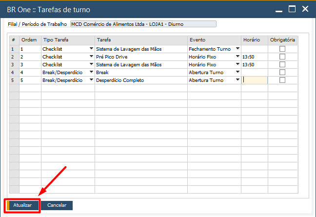
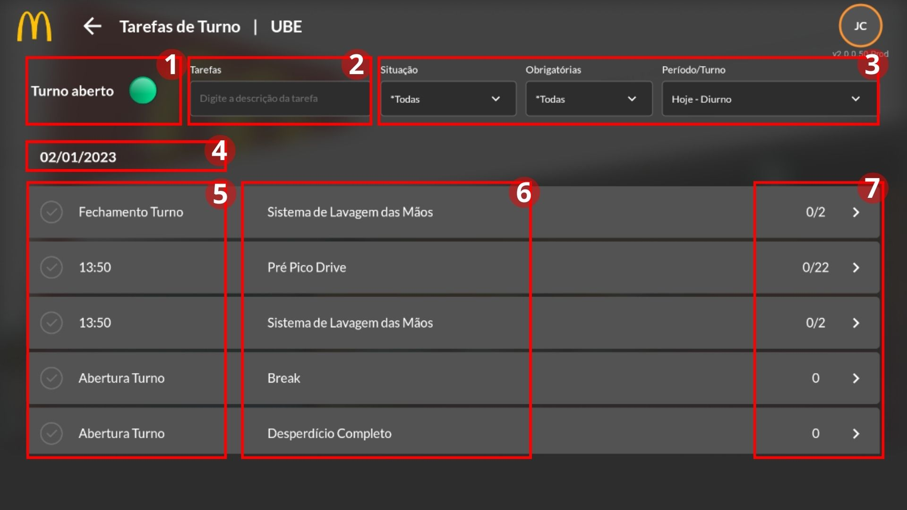
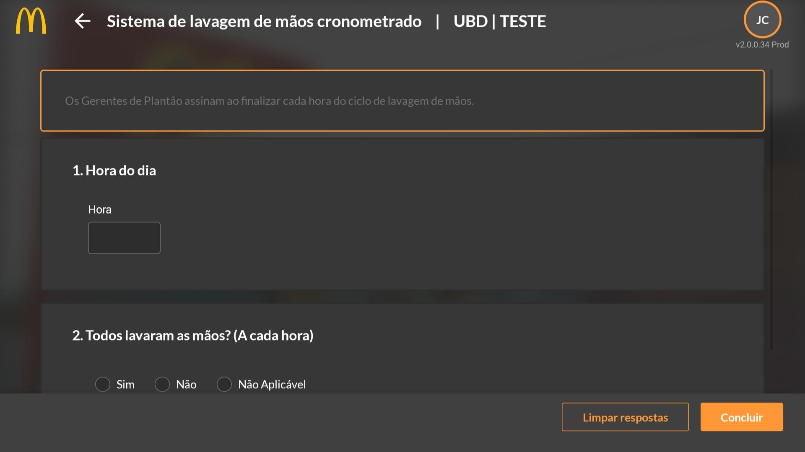
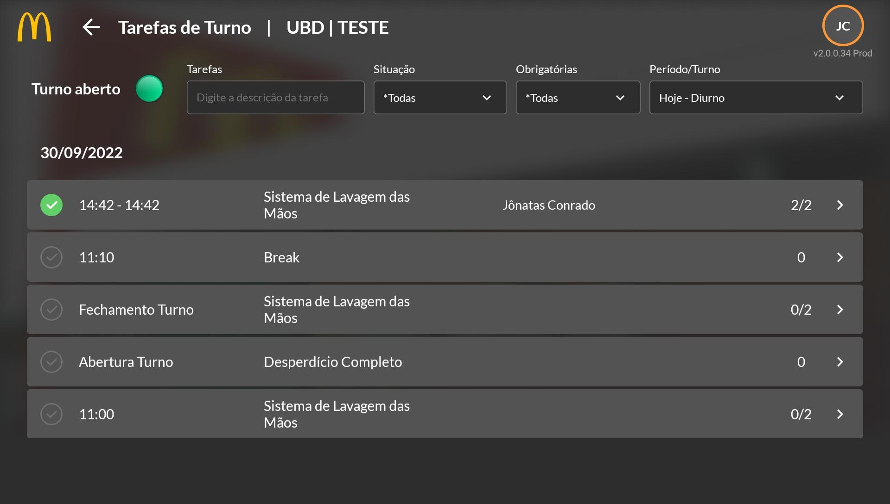

Tarefas de Turno
Introdução
O próximo módulo, ao lado do “Caixa e Cofre”, é o Tarefas de Turno, este módulo possibilita fazer customizações de tarefas para cada turno de trabalho, com flexibilidade para definir atividades a serem realizadas pelo usuário em horários fixos, na abertura do turno ou no fechamento de turno.
Qual utilidade deste módulo?
É um módulo que permite ao gerente uma forma organizada e fácil para realizar seus procedimentos diários da loja, de forma que agilize o controle de break e desperdício, de tarefas obrigatórias sobre procedimentos de Higiene e Segurança Alimentar etc.
Acesso ao Módulo
Tarefas de Turno – SAP
É neste módulo que os turnos de trabalhos da franquia são definidos através da tela de “Período de Trabalho”, os quais serão utilizados em filtros dentro do aplicativo, além de servirem para determinação das tarefas de turno, para isto basta selecionar a linha de um turno e clicar no botão do rodapé “Tarefas”, irá abrir uma tela contendo espaço para inserir checklists ou contagens de estoque, escolher em que momento devem ser realizadas e se serão ou não obrigatórias.
 Tarefas de Turno – APP
Esta é a primeira e principal tela que compõe o módulo de Tarefas de Turno, no qual aparece o status do turno (Se o turno aberto estiver com o círculo em verde representa que o turno está aberto, porém quando estiver fechado ele ficará com o círculo em vermelho) (1), uma barra de pesquisa por palavras (2), e opções de filtro que permitem selecionar a situação da tarefa (concluída, atrasada ou em aberto), se são tarefas obrigatórias e o período que deve ser realizada (3). Abaixo dos filtros é mostrada a data atual (4) e uma lista que, por padrão, mostra todas as tarefas criadas, com o respectivo momento/horário a ser cumprida (5), o título da tarefa (6) e quantidade de itens a serem preenchidos (campos obrigatórios dentro do formulário) (7).
Para continuar e realizar uma tarefa é necessário clicar no item que deseja, e então irá abrir uma tela com os respectivos campos a serem alterados ou checados. Nela é possível visualizar a tarefa que foi selecionada, se está disponível e quantidade de questões a serem preenchidas do formulário.
Para demonstração de uso, foi selecionada a tarefa de “Sistema de Lavagem de Mãos Cronometrado”, a tarefa é comum para todas as lojas e possui duas perguntas a serem preenchidas e é necessário responder cada questão para finalizar o processo da tarefa.
Após preenchido e finalizado, a tarefa será exibida com o círculo verde e o sinal de positivo na tela inicial do módulo mostrando que aquela tarefa foi concluída.